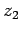
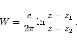

Inhalt Index DeskTop Bronstein

 Funktionentheorie Funktionen einer komplexen Veränderlichen Konforme Abbildung Komplexe Potentiale
Funktionentheorie Funktionen einer komplexen Veränderlichen Konforme Abbildung Komplexe Potentiale


Für eine Quelle im Punkt z1 und eine Senke im Punkt , beide mit gleicher Intensität, erhält man durch Überlagerung das komplexe Potential
|  | (14.27) |
Die Potentiallinien bilden Apollonische Kreise bezüglich z1 und z2, die Feldlinien stellen Kreise durch z1 und z2 dar (s. Abbildung).